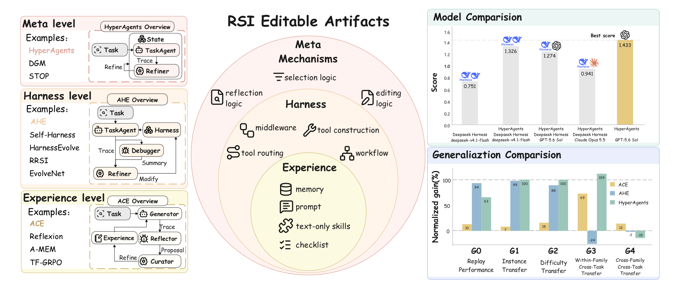
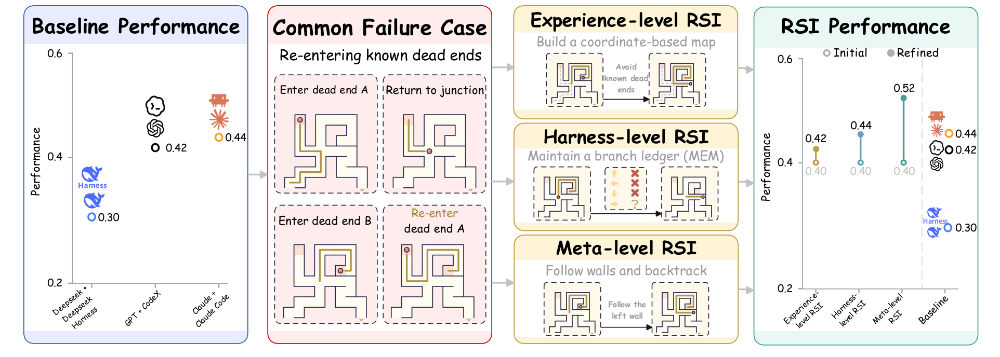
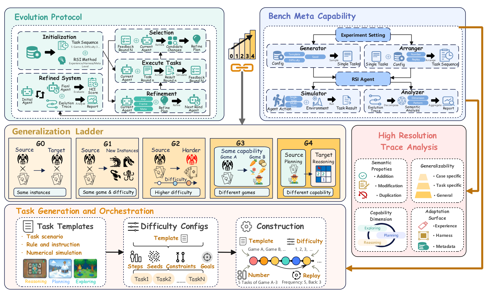

A capability-oriented ladder
Five levels turn “did it improve?” into a staged question: G0 replay, G1 new instances, G2 harder instances, G3 same-capability transfer, and G4 cross-capability transfer.
Evaluating generalization in self-improving agents
Does an agent get better—or just fit the task?
A benchmark that separates durable self-improvement from task-specific fitting across instances, difficulty levels, tasks, and capability families.
Shanghai Jiao Tong University · Theseus Labs · Humanlaya · Shanghai AI Lab
The central question
RSI agents rewrite their memories, prompts, skills, or harnesses. SelfImprove-Bench asks whether those refinements survive replays, unseen instances, harder settings, new tasks, and even new capability families.
Five levels turn “did it improve?” into a staged question: G0 replay, G1 new instances, G2 harder instances, G3 same-capability transfer, and G4 cross-capability transfer.
Templates and difficulty coefficients generate reproducible game instances, while configurable held-in, held-out, replay, and mixed-source sequences support sustained evaluation.
Refinement proposals are decomposed and labelled by semantic relation, scope, capability target, and modification surface, connecting outcomes to what the agent actually changed.

Expand figuremethod–task pairs lose performance on G0 replay.
pairs improve on held-out instances at the training difficulty.
HyperAgents cross-capability G4 directions show positive HCI.
retained refinement opinions are analysed across six games and three methods.
Leaderboard
HCI normalizes the change from an initial agent against the remaining headroom to a reference score. A positive value means the refinement closed part of that gap; a negative value means it fell behind.
HCI = (sa − sb) / (sr − sb)sb before evolution score · sa after evolution score · sr reference score.
Ranked by G1 (new instances). 18 entries shown.
| # | Game | Method | G0 Replay | G1 New inst. | G2 Harder | G3 Same ability |
|---|---|---|---|---|---|---|
| 01 | CombatPlanning | HyperAgentsMeta-level | +62.5% | +100.0% | +100.0% | +109.2% |
| 02 | FarmPlanning | HyperAgentsMeta-level | +28.0% | +100.0% | +19.3% | −0.1% |
| 03 | CombatPlanning | AHEHarness-level | +93.8% | +99.2% | +88.4% | −24.3% |
| 04 | FarmPlanning | ACEExperience-level | −10.2% | +81.3% | +14.6% | +7.0% |
| 05 | HeroReasoning | AHEHarness-level | +7.0% | +47.5% | +21.4% | +19.8% |
| 06 | MCExploring | AHEHarness-level | −179.4% | +43.4% | N/A | 0.0% |
| 07 | SweepmineReasoning | AHEHarness-level | −2.0% | +33.7% | +27.2% | −2.2% |
| 08 | SweepmineReasoning | ACEExperience-level | −6.0% | +21.0% | +20.0% | −3.0% |
| 09 | AstrayExploring | HyperAgentsMeta-level | −1.2% | +20.0% | −2.9% | −5.3% |
| 10 | MCExploring | HyperAgentsMeta-level | +28.4% | +17.9% | +40.0% | −33.3% |
| 11 | SweepmineReasoning | HyperAgentsMeta-level | +2.8% | +12.9% | +10.5% | −1.7% |
| 12 | AstrayExploring | AHEHarness-level | +39.6% | +6.7% | +20.0% | +9.1% |
| 13 | HeroReasoning | ACEExperience-level | −5.4% | +6.7% | +10.9% | +11.5% |
| 14 | CombatPlanning | ACEExperience-level | +9.7% | +6.6% | +14.5% | +69.2% |
| 15 | AstrayExploring | ACEExperience-level | +11.4% | +3.3% | −1.4% | +5.0% |
| 16 | MCExploring | ACEExperience-level | −10.1% | +2.0% | +35.0% | 0.0% |
| 17 | HeroReasoning | HyperAgentsMeta-level | −1.9% | −1.7% | +5.7% | +19.4% |
| 18 | FarmPlanning | AHEHarness-level | +58.7% | −33.8% | −1.8% | +15.5% |
Case JSON · selected examples
holdout-heros_journey-d1-0001
A proc_over task with five seeds and a 3× action budget.
{
"task_id": "holdout-heros_journey-d1-0001",
"difficulty": 1,
"task_type": "proc_over",
"logic_version": null,
"seeds_per_task": 5,
"action_budget_multiplier": 3,
"interaction_protocol": "action_sequence_v1",
"initial_currency": 1000
}holdout-heros_journey-d5-0081
A proc_chain_quint task with ordered extensions and a tighter 2× budget.
{
"task_id": "holdout-heros_journey-d5-0081",
"difficulty": 5,
"task_type": "proc_chain_quint",
"logic_version": "ordered_extensions_v1",
"seeds_per_task": 5,
"action_budget_multiplier": 2,
"interaction_protocol": "action_sequence_v1",
"initial_currency": 1000
}holdout-sweepmine-d1-0001
A 5 × 5 board with 3 mines and 16 allowed steps.
{
"task_id": "holdout-sweepmine-d1-0001",
"difficulty": 1,
"seed": 13921371190180085057,
"rows": 5,
"cols": 5,
"mine_count": 3,
"max_steps": 16
}holdout-sweepmine-d5-0081
The board grows to 9 × 9 with 15 mines and 52 steps.
{
"task_id": "holdout-sweepmine-d5-0081",
"difficulty": 5,
"seed": 2575373377970214880,
"rows": 9,
"cols": 9,
"mine_count": 15,
"max_steps": 52
}holdout-farm-d1-0001
A compact eight-day economy with four crops.
{
"task_id": "holdout-farm-d1-0001",
"difficulty": 1,
"initial_money": 200,
"farmland_count": 8,
"duration_days": 8,
"available_crops": ["carrot", "strawberry", "sunflower", "unmilled_rice"],
"reference_profit": 250
}holdout-farm-d5-0081
The horizon expands to 24 days, 24 plots, and 12 crops.
{
"task_id": "holdout-farm-d5-0081",
"difficulty": 5,
"initial_money": 200,
"farmland_count": 24,
"duration_days": 24,
"available_crops": [
"blue_jazz", "carambola", "cauliflower", "coffee_bean",
"kale", "melon", "parsnip", "potato", "rhubarb",
"sunflower", "tulip", "wheat"
],
"reference_profit": 4300
}holdout-combat-d1-0001
A three-stage run capped at card and enemy tier 1.
{
"task_id": "holdout-combat-d1-0001",
"difficulty": 1,
"player": {"max_hp": 80, "initial_gold": 120, "energy_per_turn": 3, "draw_count": 5},
"initial_deck": {"guard": 4, "iron_wave": 1, "strike": 4},
"rules": {"maximum_card_tier": 1, "maximum_enemy_tier": 1, "max_combat_turns": 15},
"reference_score": 425
}holdout-combat-d5-0081
An 11-stage run expands the deck and raises both tiers to 5.
{
"task_id": "holdout-combat-d5-0081",
"difficulty": 5,
"initial_deck": {
"fortress": 1, "guard": 4, "iron_wave": 1, "strike": 4,
"transcend": 1, "twin_strike": 1, "uppercut": 1
},
"rules": {"maximum_card_tier": 5, "maximum_enemy_tier": 5, "max_combat_turns": 15},
"reference_score": 468
}03_05
An embodied navigation goal tied to maze level 5.
{
"task_id": "03_05",
"game_id": "03_astray",
"game_url_suffix": "?level=5",
"max_steps": 100,
"task_target_score_field": 1.0,
"task_prompt": "Complete maze level 5 by reaching the goal exit.\n",
"evaluator_config": {"score_field": "game_state.completion_progress"}
}18_05
A resource goal that requires locating and mining iron ore.
{
"task_id": "18_05",
"game_id": "18_minecraft-clone-glm",
"max_steps": 100,
"task_target_score_field": 5,
"task_prompt": "Secure at least 5 newly collected iron ore blocks during this run.\nOnly iron ore gained after the run begins counts toward this task.\nHead underground, locate iron ore blocks, and mine them once they are lined up in view.\n",
"evaluator_config": {"score_field": "game_state.inventory.item_gains.iron_ore"}
}Source: SelfImprove-Bench-Cases on Hugging Face. JSON excerpts show selected fields; long catalogs and metric lists are omitted. Astray and Minecraft use task variants rather than D1–D5 coefficients.
Direct agents vs. refinement
The highest direct configuration reaches 0.44. Meta-level refinement reaches 0.52. Experience-level refinement is 0.42, below the strongest direct agent.
Case analysis
ACE, AHE, HyperAgents, and HyperDSH often respond to the same failure with the same intent—verify, check, backtrack—but they encode the repair at different layers.

Expand figureEvery method turns a trace-level failure into an explicit verification, planning, or recovery rule instead of patching one instance.
ACE edits experience artifacts, AHE edits prompts and harness mechanisms, while HyperAgents edits the agent codebase and its improvement loop.
A local checklist may fit one task; a general solver or harness rule is more likely to travel—but can also introduce new regressions.
Failure patterns
| Failure pattern | ACE | AHE | HyperAgents | HyperDSH |
|---|---|---|---|---|
| HeroCopies demonstrated plans, producing redundant actions. | Decompose demonstrations; combine only the action blocks needed for target attributes. | Recombine blocks by attribute; replace only what contrastive evidence supports. | Model each feature as an action block and combine the blocks inferred for the target. | Assemble the primary plan by target attributes, adding up to two rounds of blocks from other demonstrations. |
| HeroMisreads action types, order, or counts. | Infer action blocks through controlled comparisons between demonstrations. | Use shell tools to extract demonstrations and track evidence by attribute. | Add text instructions that infer action types and counts separately. | Select blocks with counts, then check order and placement against demonstrations. |
| SweepmineMarks cells without checking all current board constraints. | Check local constraints across the board and recompute them after every action. | Rebuild constraints step by step, reason through subtraction or enumeration, and verify before acting. | Derive residual constraints and combine overlapping constraints with the total mine count. | Use a checklist plus a skill that tracks feasible mine placements and the total mine count. |
| MCMisidentifies collection targets or their collectability. | Add a checklist to verify that the target can be mined. | Add middleware prompts to verify the target's current state. | Add text instructions to verify presence, reachability, and type. | Check type and state before collection; additionally monitor collection progress. |
| MCFails to adapt when navigation makes no progress. | Compare position and distance before and after movement; reorient or excavate when movement stalls. | Add middleware prompts that switch to excavation toward the resource when exploration stalls. | Add code to prevent consecutive repeated actions and prompts to turn or jump when stuck. | Compare position with the resource's location and stop moving farther away. |
| AstrayMisjudges movement direction or traversable paths. | Assess movement with velocity and displacement along the commanded axis. | Identify paths from connected floor regions and follow confirmed bends without repeated turns. | Assess movement with nearby walls and displacement along the commanded axis. | Use structured coordinate changes; fall back to landmark-relative position when coordinates are unavailable. |
| AstrayConfuses explored routes and known dead ends with unexplored branches. | Record exploration history and connectivity to build a map. | Keep a compact MEM ledger of explored branches and confirmed dead ends. | Add explicit wall-following and backtracking rules. | Follow a fixed wall side, record tried routes, and switch after consecutive moves away from the goal. |
| CombatPrioritizes victory or fast kills over remaining HP. | Compare combat plans by remaining HP. | Build a dynamic-programming solver that maximizes remaining HP after victory. | Build a solver that compares complete combat plans and maximizes remaining HP. | Use text instructions to compare plans through dynamic programming and maximize remaining HP. |
HyperDSH is a variant that applies HyperAgents' improvement mechanisms to DeepSeek Harness. It is not the same agent configuration as the main HyperAgents experiments.
Method
The framework combines controllable game instances, a staged generalization protocol, and a fine-grained analysis of saved evolution traces. The backbone model stays fixed; only the designated editable artifacts change.

Expand figureSame instance, current agent.
Held out at the training difficulty.
New instances at a higher difficulty.
A different game in the same capability.
A game from a different capability family.
Instantiate a task from game g, difficulty d, and seed ξ: τ = Gg(d, ξ). Templates define scenarios, rules, constraints, goals, and numeric simulations.
Assemble held-in and held-out sequences with configurable task types, counts, difficulty, ordering, and replay frequency. Duplicate descriptor hashes are rejected.
After each non-replay task, the method receives a structured feedback result and may modify its workspace. Replays do not trigger refinement; the backbone remains fixed.
Compare saved system states along G0–G4 with HCI, then decompose retained opinions into semantic, scope, capability, and surface labels.
Reproducibility
Each run persists config.resolved.json and task_manifest.json, including instances, seeds, sequence order, and replay links. Seeds derive deterministically from root seed, phase, game, difficulty, instance index, and generation attempt.
Fair refinement
Methods may inspect and modify their designated workspace, but cannot access benchmark evaluation modules or directly execute evaluation instances. Feedback arrives through a prescribed FeedbackResult interface.
Trace analysis
Retained proposals are labelled as addition, modification, or duplication; as task-, capability-, or general-scoped; by target capability; and by experience, harness, or meta surface.
Contributors